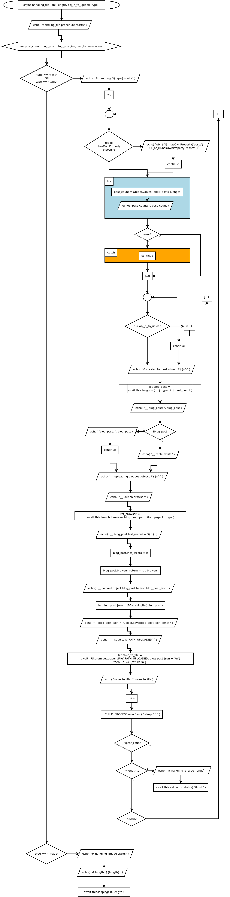

async handling_file( obj, length, obj_n_to_upload, type )
Flowchart

Code
async handling_file( obj, length, obj_n_to_upload, type ){
echo( "handling_file procedure starts" );
var post_count, blog_post, blog_post_img, ret_browser = null;
if( type == "text" || type == "table" ){
echo( `# handling_${type} starts` );
for( let i=0; i < length; i++ ){
if( !obj[i].hasOwnProperty("posts") ){
echo( `obj[${i}].hasOwnProperty('posts') : ${obj[i].hasOwnProperty("posts")}` );
continue;
}
try{
post_count = Object.values( obj[i].posts ).length;
echo( "post_count: ", post_count );
}catch{
continue;
}
for( let j=0; j < post_count; j++ ){
//console.log( "# n______: ", n);
if( n < obj_n_to_upload ){
n++;
continue;
}
echo( `# create blogpost object #${n}` );
let blog_post = await this.blogpost( obj, type , i, j, post_count ); //check this
echo( "__ blog_post: ", blog_post );
if( !blog_post ){
echo( "blog_post: ", blog_post );
continue;
} else {
echo( "__ table exists" );
}
// uploading texts
echo( `__ uploading blogpost object #${n}` );
echo( "__ launch browser" );
ret_browser = await this.launch_browser( blog_post, path, first_page_id, type );
echo( `__ blog_post.last_record = ${n}` );
blog_post.last_record = n;
blog_post.browser_return = ret_browser;
echo( `__ convert object blog_post to json blog_post_json` );
let blog_post_json = JSON.stringify( blog_post );
echo( "__ blog_post_json: ", Object.keys(blog_post_json).length );
echo( `__ save to ${PATH_UPLOADED}` );
let save_to_file = await _FS.promises.appendFile( PATH_UPLOADED, blog_post_json + "\n").then( (a)=>{return !a;} );
echo( "save_to_file: ", save_to_file );
n++;
// pause a second
_CHILD_PROCESS.execSync( "sleep 0.1" );
}
if( i == length - 1){
echo( `# handling_${type} ends` );
await this.set_work_status( "finish" );
}
}
} else if( type == "image" ){
echo( "# handling_image starts" );
echo( `# length: ${length}` );
this.looping = async function ( idx = 0, length ){
echo( `\n# idx: ${idx} of ${length}` );
obj_n_to_upload = 0; //test
echo( "# obj_n_to_upload: ", obj_n_to_upload );
echo( "# n: ", n );
if( n < obj_n_to_upload ){
n++;
}
echo( `# create image blogpost object #${n}` );
let blog_post = await this.blogpost( obj, type, idx );
echo( "# blog_post: ", !!blog_post );
// uploading images
echo( `# uploading blogpost image object #${n}` );
echo( "# launch browser" );
let ret_browser = await this.launch_browser( blog_post, path, first_page_id, type );
echo( "post launch_browser" );
n++;
// pause a second
_CHILD_PROCESS.execSync( "sleep 1" );
if( idx < length ){
idx++;
await this.looping( idx, length );
} else {
echo( "# uploading image ends" );
}
}
await this.looping( 0, length );
/*
for( let i=0; i < length; i++ ){
obj_n_to_upload = 0; //test
console.log( "# obj_n_to_upload: ", obj_n_to_upload );
console.log( "# n: ", n );
if( n < obj_n_to_upload ){
n++;
continue;
}
console.log( `# create image blogpost object #${n}` );
let blog_post = await this.blogpost( obj, type, i );
console.log( "# blog_post: ", !!blog_post );
// uploading images
console.log( `# uploading blogpost image object #${n}` );
console.log( "# launch browser" );
let ret_browser = await this.launch_browser( blog_post, path, first_page_id, type );
n++;
// pause a second
_CHILD_PROCESS.execSync( "sleep 1" );
if( i == length - 1){
console.log( "# uploading image ends" );
//this.final( this );
}
}
*/
}
}
Refers to:
async blogpost( obj, type, i = null, j = null, post_count = null )
async launch_browser( blog_post, path, first_page_id, type )
this.looping = async function( idx=0, length )